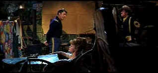

| Hallelujah
Trail/C,D |
| MGM/1965/159/WS 2.35 |
Wouldn't it be great if there were the slightest reason to afford this
bloated western comedy a hallelujah? Such is not the case, even with some of my favorite actors
trying hard, probably too hard, to find laughter in the lame script about a wagon train filled with
booze racing to a thirsty Denver before the snows close down the trails. Burt Lancaster plays the
Colonel Thaddeus Gearhart, commander of the fort responsible for providing a cavalry escort for the
wagon train. Things get a bit complicated because Cora Templeton Massingale, a leading Temperance
crusader, is on hand at the fort to rally the local women. Massingale, played by a delicious Lee
Remick, gets wind of the Denver shipment and inspires "her" ladies to do something about
preventing the spread of demon rum. At the same time, the local Sioux Indians see the wagon train
as an opportunity to exercise their weakness for the white man's lightning brew.
It all takes place in a mere 159 minutes of broad, sometimes insulting,
comedy. Lots of good champagne goes to waste, as well as the efforts of some very talented people
involved. Directed by action master John Sturges, the humor is this chaotic mess of a movie is
beyond comprehension. Did Sturges see something in the screenplay by John Gay that didn't translate
to the screen? Elmer Bernstein's big, familiar western score tries hard and the cinematography by
Robert Surtees is big and beautiful, but who cares. It just is not funny.
 |
| Lee's hot bath has Burt steaming.
©MGM |
This is at least the third time I have seen The Hallelujah Trail. I
remember seeing it in its theatrical run, suffered through it on laser disc and have exercised my
masochistic side for the time on DVD. Each time, I had hopes that I had just missed the humor on
the previous viewing. I don't think I will ever watch this film again, as long as memory still
serves me.
Burt Lancaster plays it broad but straight and he and Lee Remick have some
nice screen chemistry. Remick is a pretty good comedienne, and the nicest moments int he film play
out between Burt and Lee. It's kind of fun to see a young Martin Landau playing Chief
Walks-Stooped-Over and Donald Pleasance plays his trade as Oracle Jones quite well despite being
given dry bones for a script. Jim Hutton, never one of my favorite actors, plods along as Captain
Paul Slater and Pamela Tiffin compliments his chores as the Colonel's daughter, a losing
proposition especially in Tiffin's hands. Brian Keith is so far over the top as whiskey dealer
Frank Wallingham, it would be easy to believe he played the role while totally under the influence.
The DVD looks lousy. It is either sourced from an old composite master or
somebody dropped the brains and forget to flag the 2-3 pulldown. Every mountain edge is bouncing
around like a Mexican jumping bean, not to mention wagon train edges, hat brims and crates of
booze. The color has aged survived pretty well. Saturation is strong and the overall production
design comes to life in brilliant DVD colors. The image is not the sharpest, but it's adequate.
Night scenes are pretty have good contrast levels, though I thought blacks were slightly
compressed. The score has been re-mixed to Dolby Digital 5:1 and it's sounded pretty good.
|
|
|
|

The
Movie Poster Archive include extensive poster images from the films of stars like Susan Hayward,
Kirk Douglas, Katharine Hepburn and many more. Our featured star is Burt Lancaster.


The wonderful comedy of Danny Kaye comes from a sweet source, making it live for audiences of
all ages. Patter songs and graceful dances are part of Kaye's world. Click on the image for Any Day
Danny Kaye.

A new Films on Disc space dedicated to purging accumulated home
theater angst and other movie related frustrations, with a measure of praise to balance the
vitriol. The first column takes on:
Inserts and the
Pop-Up Window

Cinemedia is
the largest film and media directory with over 25,000 links.

Cyber Theater is an outstanding source for accurate video information. Check out their 16 x 9
format guide for a thorough understanding of DVD encoded that way.

DVD
Demystified makes it all clear.The official Internet DVD FAQ for the rec.video.dvd
Usenet newsgroups.
 Brad Lang continues to add more interesting material to the extensive
collection at Classic
Movies. Everything from actors and actress to your favorite directors is
linked at the site. Brad Lang continues to add more interesting material to the extensive
collection at Classic
Movies. Everything from actors and actress to your favorite directors is
linked at the site.
|